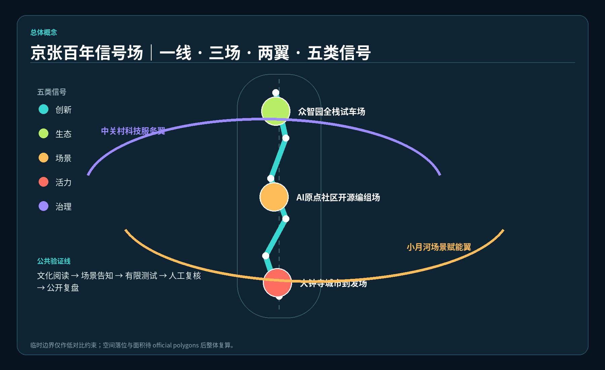
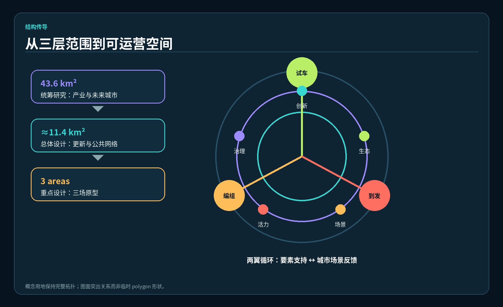
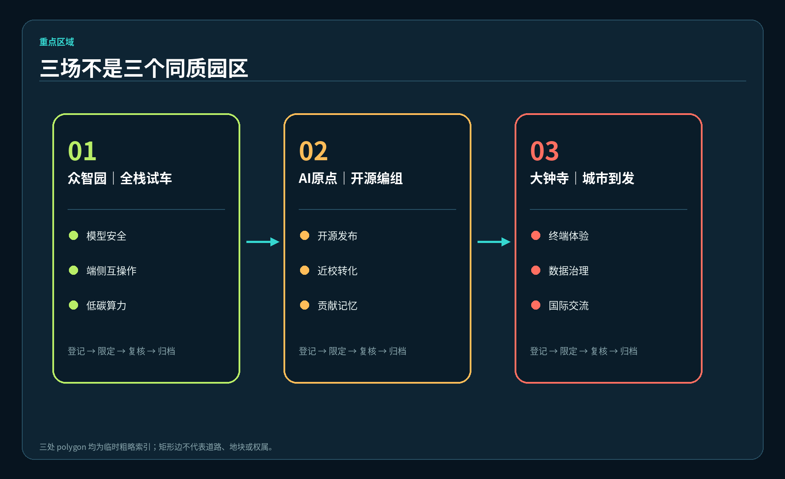
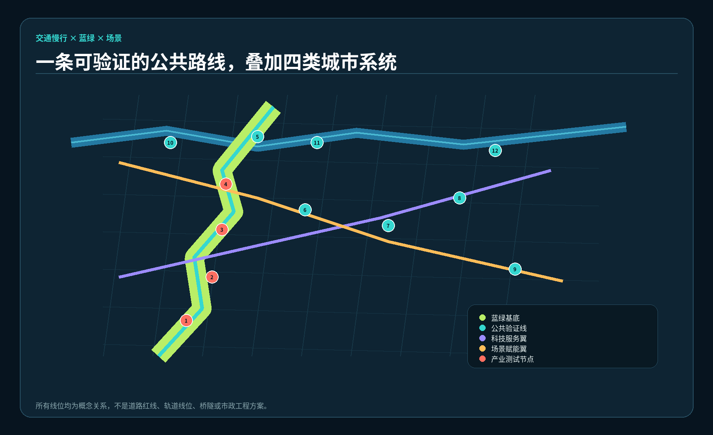
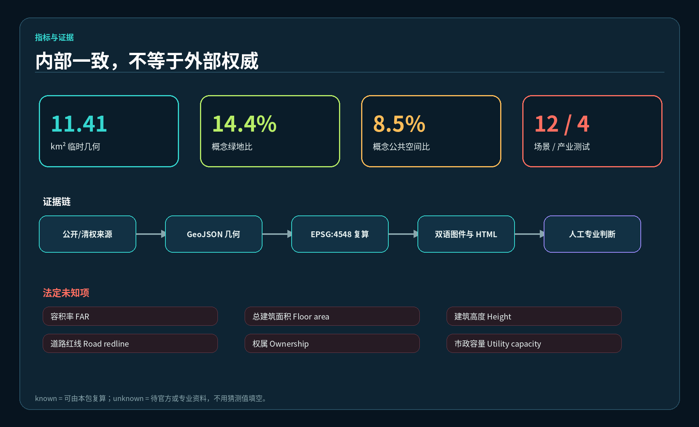

总览地图

三层范围 · 用地分区

统筹研究提出产业与未来城市问题，总体设计形成更新与公共网络，重点区域以三场原型验证。概念用地完整覆盖临时范围，但不是法定用地。
重点区域

交通慢行 · 蓝绿公共空间

遗址公园公共验证线、科技服务翼、场景赋能翼和十二个节点只表达关系。所有跨路、轨道、市政与蓝线条件待专业核验。
建筑 · 更新项目
3概念建筑组件：信号工坊、编组厅、到发客厅
8专业深化工作包，不是承诺项目
unknown高度、FAR、总建筑面积、具体拆改留
AI 场景
核心指标

11.41 km²临时几何内部复算
14.4%概念绿地比
8.5%概念公共空间比
任务覆盖
agent.1总体概念与功能统筹covered
agent.2全栈创新生态covered
agent.3AI+场景与画像covered
agent.4公共空间与地标covered
agent.5文化融合叙事covered
agent.6年度运营体系covered
自检状态
目标：deterministic validation、spatial review、visual packaging、professional evidence 四项 PASS；PASS 仅表示可进入内容评审。
| Boundary | provisional_constraint |
|---|---|
| Official polygon | unknown / pending |
| Human review | required |
来源
OFFICIAL-ANNOUNCEMENT · AGENT-TASKBOOK · SITE-PACKAGE · GLOBAL-CASE-INDEX
完整出处、许可和限制见 sources.json。国际案例只作机制背景。
假设
- 边界和三处重点区为临时粗略几何。
- 控规、权属、建筑现状、道路、市政、文保、防洪条件待补。
- 建筑、交通、分期和年度运营均为概念参考。